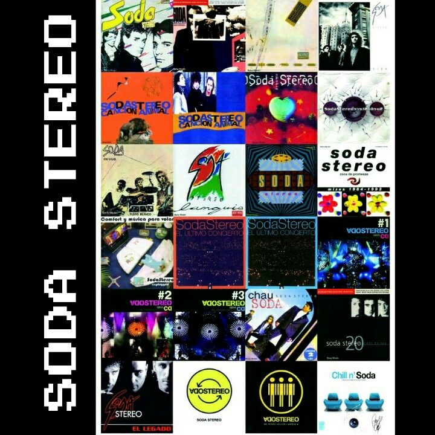

Discografía de Soda Stereo
La banda argentina Soda Stereo es considerada una de las más influyentes en la historiadel rock en español. Formada en 1982 en Buenos Aires por Gustavo Cerati, Zeta Bosio y Charly Alberti, el grupo logró un enorme impacto en toda Latinoamérica gracias a su innovación musical, sus letras y su estilo visual.

A lo largo de su carrera, Soda Stereo lanzó varios álbumes que marcaron distintas etapas de evolución musical, pasando desde el new wave y el pop rock de los años 80 hasta sonidos más alternativos y experimentales en los años 90. A continuación se presenta su discografía principal.
| Año | Álbum | Tipo | Canción destacada |
|---|---|---|---|
| 1984 | Soda Stereo | Álbum de estudio | Trátame suavemente |
| 1985 | Nada Personal | Álbum de estudio | Cuando pase el temblor |
| 1986 | Signos | Álbum de estudio | Persiana Americana |
| 1988 | Doble Vida | Álbum de estudio | En la ciudad de la furia |
| 1990 | Canción Animal | Álbum de estudio | De música ligera |
| 1992 | Dynamo | Álbum de estudio | Primavera 0 |
| 1995 | Sueño Stereo | Álbum de estudio | Zoom |
| 1987 | Ruido Blanco | Álbum en vivo | Juego de seducción |
| 1996 | Comfort y Música Para Volar | En vivo / MTV | Un misil en mi placard |
| 1997 | El Último | Álbum en vivo | De música ligera |
| 2007 | Me Verás Volver Hits & + | Compilación | Me verás volver |
| Canción | Año | Álbum | Importancia |
|---|---|---|---|
| De música ligera | 1990 | Canción Animal | La canción más famosa del rock latino |
| En la ciudad de la furia | 1988 | Doble Vida | Uno de los himnos de la banda |
| Persiana Americana | 1986 | Signos | Gran éxito internacional |
| Cuando pase el temblor | 1985 | Nada Personal | Fusionó rock con música andina |
| Zoom | 1995 | Sueño Stereo | Uno de sus últimos éxitos |
| Primavera 0 | 1992 | Dynamo | Etapa alternativa de la banda |
| Trátame suavemente | 1984 | Soda Stereo | Primer gran éxito |
| Ella usó mi cabeza como un revólver | 1995 | Sueño Stereo | Canción muy representativa |